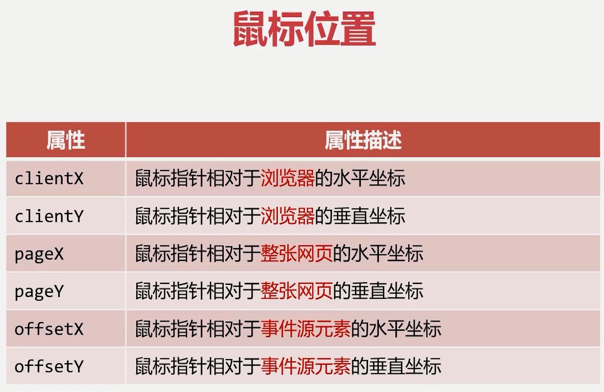
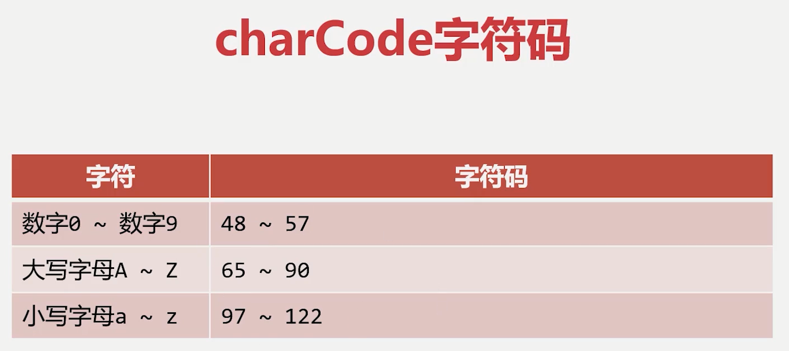
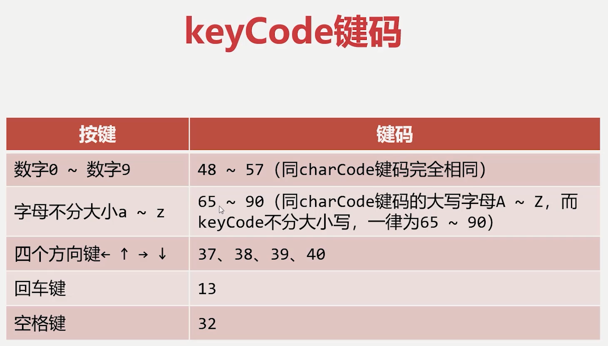

事件监听
事件、事件监听、事件委托
事件监听
什么是事件监听
编写程序，让计算机随时发现这个事件发生了
事件
JavaScript使我们有能力创建动态页面，网页中的每一个元素都可以产生某些触发JavaScript函数的事件。我们可以认为事件是可以被JavaScript侦测到的一种行为
事件流
冒泡型事件流：事件的传播是从最特定的事件目标到最不特定的事件目标。即从DOM树的叶子到根。【推荐】
捕获型事件流：事件的传播是从最不特定的事件目标到最特定的事件目标。即从DOM树的根到叶子。
DOM先执行捕获阶段，在执行冒泡阶段
DOM标准采用捕获+冒泡。两种事件流都会触发DOM的所有对象，从document对象开始，也在document对象结束。
事件监听的方法
设置事件监听的方法主要有onxxx() 和 addEventListener()两种方法
如果给事件设置两个或多个同名事件
DOM 0 级写法：后面写的会覆盖前面写的
DOM 2 级写法： 会顺序执行
onxxx（）方法
DOM 0级事件监听：onXXX（）方法只能监听冒泡阶段
1 | oBox.onclick() = function () { |
addEventListener() 方法
DOM 2 级事件监听：addEventListener() 既可以监听捕获阶段，也可以监听冒泡阶段
1 | oBox.addEventListener('click', function () { |
事件对象
什么是事件对象
事件处理函数提供了一个形式参数，它是一个对象，封装了本次事件的细节，这个参数通常用event或者e来表示
1 | field.onkeypress = function (e) { |
常见的事件属性及方法
e.charCode和e.keyCode属性
（注意使用，逐渐被弃用）
e.charCode属性通常用于onkeypress事件中，表示用户输入字符的 “字符码”
e.keyCode属性通常用于onkeydown事件和onkeyup中，表示用户按下按键的 “键码”（注意使用，逐渐被弃用）
 e.preventDefault ( ) 方法
e.preventDefault ( ) 方法用来阻止事件产生的 ”默认动作“，比如一些特殊的业务需求，需要阻止事件的 ”默认动作“
比如让用户只能在输入框中小写字母和数字，其他输入字符没有效果
1
2
3
4
5
6
7<script>
let field = document.getElementById("field")
field.onkeypress = function (e) {
if(!(e.keycode >= 48 && e.keycode <= 57 || e.keycode>=97 && e.keycode<= 122)){
e.preventDefault()
}
}
e.stopPropagation（）方法
e.stopPropagation（）方法阻止事件继续传播，在一些场合，非常有必要切断事件继续传播，否者会造成页面特效出现BUG
- 比如我们要做一个点击按钮弹出窗口，点击其他部分窗口关闭时，我们需要给button和 document分别设置onclick函数，一个display为block，一个display为none，但是此时会有问题，再点击button时，窗口不会再弹出了，这是因为我们点击button时，click事件会冒泡传播到document，就是说，display先被设为block，随即又被设为none，所以，我们要在onclick函数中设置e.stopPropagation（）方法，不让事件传到document中，同时，我们想要点击窗口不被关闭，也要设置e.stopPropagation方法，阻断事件传播
事件委托
利用事件冒泡机制，将后代元素事件委托给祖先元素
e.target和e.currentTarget
| 属性 | 属性描述 |
|---|---|
| target | 触发事件的最早元素，即事件”源元素“，最内层元素 |
| currentTarget | 事件处理程序附加到的元素 |
我们将事件委托给祖先元素时，给祖先元素添加事件监听函数（如onclick方法），然后用e.target获取后代元素，对这个元素的操作委托给currentTarget
- 当有大量元素需要添加事件监听时，使用事件委托可以减少内存开销
- 当有动态节点上树时，使用事件委托让新上树的元素有事件监听
事件委托注意
- 不能委托不冒泡的事件给祖先元素
onmouseenter 和 onmouseover 都表示鼠标进入事件，但是 onmouseenter 是不冒泡的，onmouseover是冒泡的
- 最内层元素不能再有内层元素了
因为e.target属性获取到的元素是当前元素的最内层元素